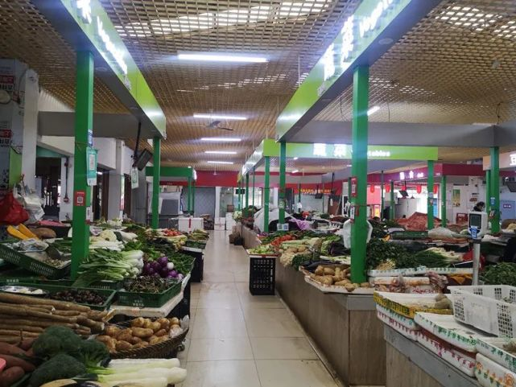
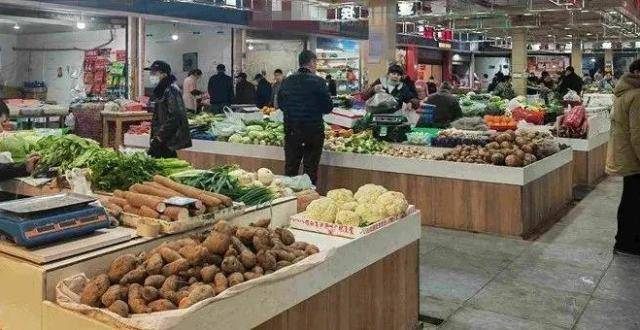
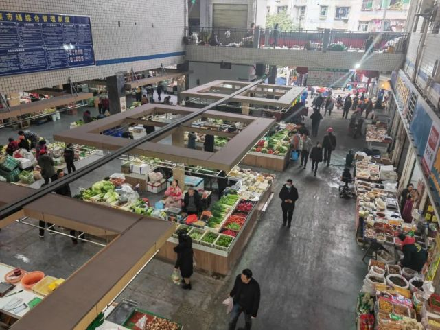
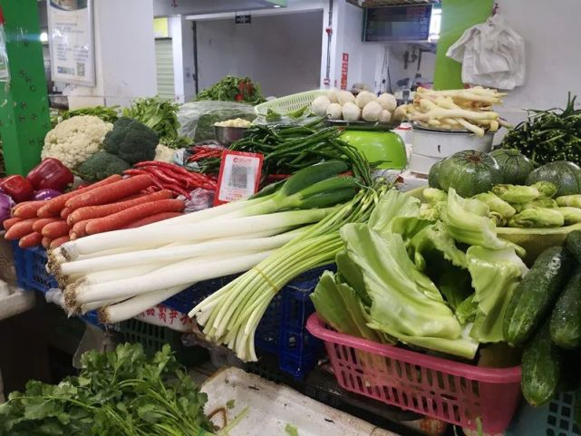

4月11日
记者从万州区商务委获悉， 日前，万州正式启动城区菜市
场整治， 今年将对城区7个菜市场进行整治提升， 满足人民
日益增长的美好生活需要。

区商务委相关负责人介绍，为深入推进全国文明城区创建，促进城市建
成区农贸市场、菜市场 （以下统称菜市场）提次城菜市场整治 坚持问题
导向、需求导向，一场一策， 对城市建成区菜市场按照 “新设新建、迁建
迁改、 改造提升、关闭利用、 农超融合、统一运营”七个一批总体思路分
类分批推进。

具体来看， 今年要实施7个菜市场整治提升， 包括观音岩菜
市场、万安菜市场、 龙都农贸市场、沪万菜市场、万顺农贸
市场人头石农贸市场菜市场、香山菜市场。

整治提升主要包括 硬件环境改善、功能布局优化、 消防设施改造另外， 今年还
将迁建、新建一批菜市场， 旨在进一步破解菜市场“脏乱差”管理难题。

全区菜市场整治将打表推进， 力争到2023年底， 刚公布！改造升
级！涉及万州城区这7个菜市场……看看文明有序、环境洁、 制度
健全、管理到位的民心市场。

相关负责人介绍， 为保证老百姓生活需求， 选址迁建类菜
市场按照“先立后破”的原则,新菜市场建设期间原市场作为
渡菜市场予以保留， 确保民生需求能够满足。 |